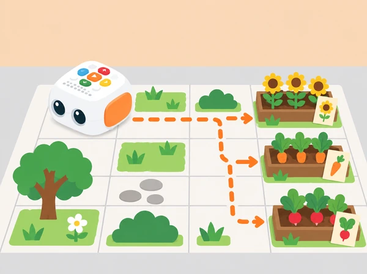

El camí de les llavors
🏷️ Hort escolar i sostenibilitat
🌱 Situació, repte i intenció
🎯 Aprenentatges i vocabulari
seqüenciar ordres, orientar-se en una graella, anticipar el destí, revisar una instrucció, observar plantes de manera respectuosa i ordenar una explicació temporal: llavor, germinació, creixement i cura. El robot segueix les ordres introduïdes; no sap què necessita la llavor ni pot comprovar si una planta està sana.
🧰 Materials i preparació
Prepareu un Tale-Bot Pro carregat, una quadrícula gran amb un punt de partida i tres bancals, targetes pròpies de plantes i fitxes planes de llavor, pictogrames de llum/aigua/aire/cura, fletxes grans i un full d’observació amb espai per dibuixar. Abans de la classe, comproveu que les caselles coincidisquen aproximadament amb un moviment del robot. En el sistema de targetes oficial, les ordres bàsiques inclouen avançar o retrocedir aproximadament 10 cm i girar 90°;
verifiqueu el comportament del model del centre sobre la superfície que fareu servir.
Trieu fotos pròpies o autoritzades de plantes de l’hort o l’entorn. No colliu plantes ni demaneu tocar terra, fertilitzants o eines. No feu servir llavors reals si hi ha risc d’ingestió, al·lèrgia o confusió amb aliments; aquesta SDA funciona completament amb targetes. Els bancals es dibuixen amb espai suficient perquè el robot gire i perquè les fitxes no bloquegen els botons ni les rodes.
📅 Seqüència didàctica
Observem i fem preguntes sobre les plantes (40 min)
Fase 1 · Activem i prediem
Observeu una planta del pati des d’un espai permés o mireu fotografies de l’hort escolar i de conreus de l’entorn valencià. Predigueu què podríeu observar abans d’apropar-vos-hi.
Fase 2 · Explorem i construïm
Descriviu el que veieu directament: fulles, tija, flor, ombra, terra o recipient. No arrenqueu fulles ni toqueu plantes desconegudes. En assemblea, trieu tres bancals ficticis i associeu-los a imatges, com flor, carlota i rave.
Fase 3 · Expliquem i registrem
Separeu observacions de prediccions: «veig una fulla nova» és diferent de «potser necessita més llum». Cada equip crea una fitxa de llavor de paper i redacta una pregunta de cura que puga investigar després amb una persona adulta.
Fase 4 · Apliquem i millorem
Reviseu la pregunta perquè es puga investigar sense danyar la planta ni assumir-ne les necessitats. Si no hi ha una planta accessible, baseu l’observació en fotografies o fonts del centre.
Fase 5 · Comprovem i reflexionem
Dissenyem el mapa i planifiquem les ordres (40 min)
Fase 1 · Activem i prediem
Col·loqueu el viver a la casella inicial i els tres bancals en destinacions diferents. Trieu un bancal i assenyaleu l’orientació inicial del robot; predigueu la casella final.
Fase 2 · Explorem i construïm
Abans d’usar Tale-Bot, feu avançar una fitxa de paper sobre la graella. Compteu cada moviment com una casella adjacent i marqueu els girs amb fitxes.
Fase 3 · Expliquem i registrem
Ordeneu fletxes o targetes d’instrucció per arribar al bancal. Anoteu dues rutes alternatives i la predicció de destinació per a cadascuna.
Fase 4 · Apliquem i millorem
Compareu quina ruta evita l’obstacle, usa menys instruccions i és més fàcil de llegir per una altra parella. La ruta més curta no sempre és la millor si confon la seqüència. Reviseu les instruccions abans d’executar-les.
Fase 5 · Comprovem i reflexionem
Programem el lliurament i depurem la ruta (40 min)
Fase 1 · Activem i prediem
Recupereu la seqüència triada i predigueu quina ordre pot ser més difícil d’executar o comprovar.
Fase 2 · Explorem i construïm
Introduïu les instruccions amb els botons de Tale-Bot. Una persona dicta o assenyala la seqüència, una altra la comprova amb les targetes i una tercera observa la ruta.
Fase 3 · Expliquem i registrem
Feu un trajecte curt fins al primer bancal. Registreu posició inicial, orientació, nombre de moviments i girs, casella final prevista i casella observada.
Fase 4 · Apliquem i millorem
Si el robot no acaba on s’esperava, torneu a situar-lo a l’inici, localitzeu l’última casella correcta i corregiu només les ordres necessàries. Quan funcione, repetiu el procés per a un altre bancal.
Fase 5 · Comprovem i reflexionem
Contem el cicle de creixement (40 min)
Fase 1 · Activem i prediem
Recupereu la ruta i predigueu quins quatre moments ajudaran a explicar el creixement sense convertir-los en una regla universal per a totes les plantes.
Fase 2 · Explorem i construïm
Creeu una història oral, gràfica o dictada amb quatre moments: llavor al viver, arribada al bancal, germinació i planta en creixement.
Fase 3 · Expliquem i registrem
A cada parada, afegiu una imatge o pictograma de llum, aigua, aire o cura. Expliqueu que són idees generals i que les necessitats reals depenen de la planta i de l’observació concreta. Una altra parella reconstrueix l’ordre del relat amb el mapa.
Fase 4 · Apliquem i millorem
Proposeu una cura per a l’hort del centre que puga comprovar una persona responsable: observar abans de regar, respectar la zona de pas o preguntar quina planta s’hi cultiva. Si no hi ha hort, formuleu-la com a pregunta o disseny, no com una instrucció per plantar sense permís.
Fase 5 · Comprovem i reflexionem
🧪 Evidències i avaluació
Guardeu el mapa, les targetes d’ordres, la seqüència corregida i el relat en quatre moments. Observeu si l’alumnat:
- identifica l’orientació inicial i tria una destinació de la graella;
- ordena instruccions i anticipa una casella d’arribada;
- compara el moviment real amb el previst i prova una correcció;
- diferencia una observació d’una predicció sobre el creixement;
- proposa una cura respectuosa que es pot consultar amb una persona adulta.
No s’avalua memoritzar una llista universal de cures ni encertar totes les rutes al primer intent. Es valora explicar què s’ha provat i com s’ha revisat amb el mapa.
♿ Participació, accessibilitat i seguretat
Oferiu caselles grans i contrastades, un mapa tàctil amb vores suaus i pictogrames per a les ordres. Es pot participar dibuixant, triant destinació, dictant la seqüència, comprovant una predicció o observant la prova; no cal manipular el robot per demostrar aprenentatge. Roteu els rols sense pressa i doneu temps d’espera. Tota l’activitat es pot fer en aula amb fotografies i targetes. No es manipulen plantes, llavors ni eines si el centre no ho ha autoritzat.
🔗 Referents i adaptació
La proposta s’inspira en l’ús de mapes, blocs tangibles de moviment, destinacions i narració que apareix en les targetes oficials d’activitat de Tale-Bot Pro i en l’activitat de Coding Set Delivery Animals. El viver, l’hort, les preguntes de cura i els materials gràfics són propis. Les ordres es comproven amb el model físic i la fitxa evita atribuir coneixements botànics al robot.